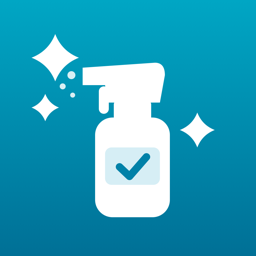

この汚れ、どの洗剤？
汚れ別・素材別の掃除ガイド
よくある質問
アカウント登録やインターネット接続は必要ですか?
どちらも不要です。汚れ・材質・洗剤のデータはアプリの中に入っているので、電波がない場所でも使えます。
「持ってる洗剤」のチェックはどこに保存されますか?
お使いの iPhone の中だけに保存されます。外部のサーバーには送信しません。アプリを削除すると消えます。
家にある洗剤がどの種類か分かりません
容器の裏の「品名」「液性」「成分」の欄を見てください。アプリの「持ってる洗剤」画面に、洗剤の種類ごとにラベルで見る所を載せています。
アプリの内容どおりにすれば安全ですか?
アプリの内容は家庭での掃除の一般的な目安です。必ず製品のラベルと説明書の注意を最優先し、目立たない所で試してから使ってください。塩素系の洗剤は、ほかの洗剤と混ぜたり続けて使ったりしないでください。
どんな資料をもとにしていますか?
混ぜると危険な組み合わせは、国民生活センター「住宅用塩素系洗浄剤の使い方－まぜるな危険！浴室などで事故が発生しています－」(2026年3月18日)と、奈良労働局(厚生労働省)「化学物質の身近なギモン」で確認しています。アプリの「アプリ情報」画面からも見られます。
お問い合わせ
不具合のご報告やご要望は、以下のフォームからお送りください。